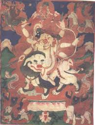

Пехар , в Монголии он известен также как Табан Хаан. Пехар это древнее тибетское божество, известен был еще в религии Бон, в последствие реформ был включен в буддийский пантеон божеств, относится к дхармапалам. Считается, что Пехар вселяется в оракулов и наделяет их духом пророчества. Впадая в транс, оракулы от имени Пехара предсказывают будущее.
Изображается Пехар в облике всадника в сопровождении спутников. Его также изображают трехголовым белотелым всадником в широкополой шляпе на белом льве с зелёной гривой. Иногда просто белым всадником. Иногда птицеголовым существом.